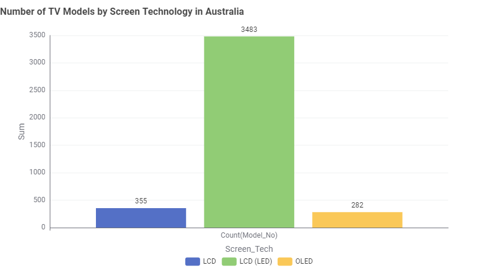
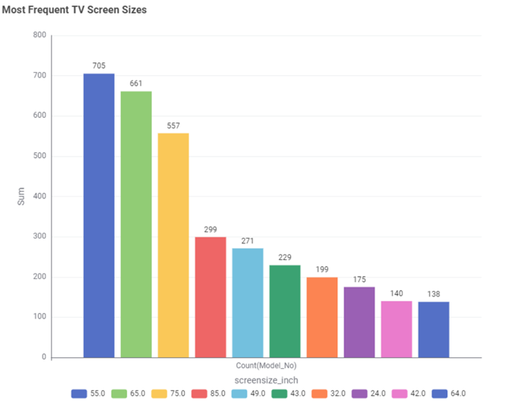
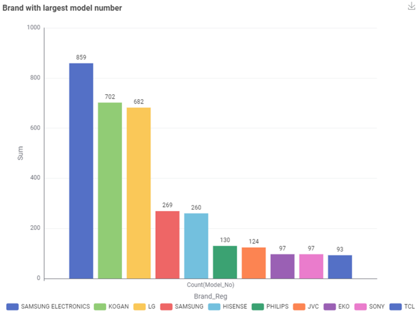
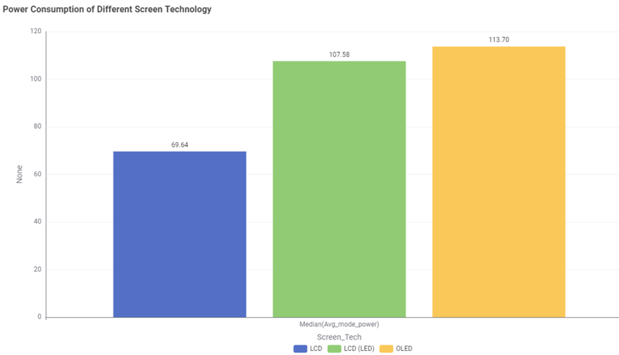
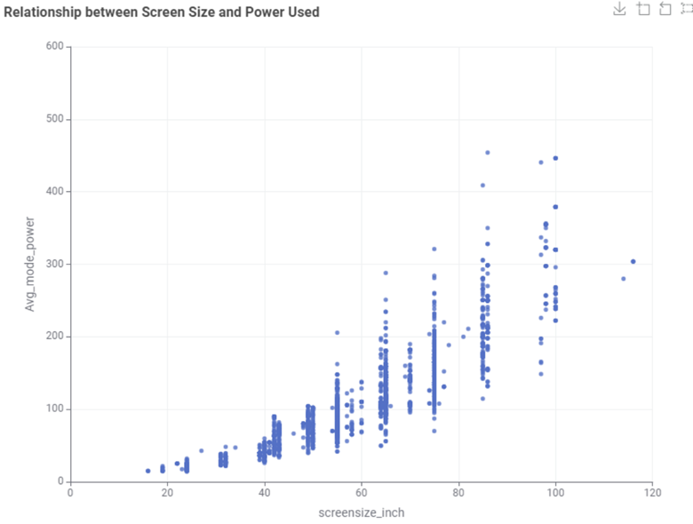
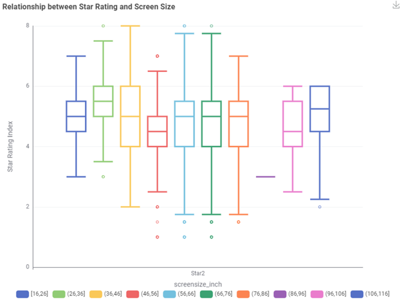

What types of TVs are sold in Australia?
LCD(OLED) are by far the most commonly sold TVs in Australia, followed by LCD and OLED.

What TV sizes are most pouplar?
55-inch TVs is the most popular choices for Australian households.

Which brand have the most models?
SAMSUNG ELECTRONICS have the most variety of TV models, followed by KOGAN and LG.

Which TV technology uses the least energy?
LCD TVs consumed the least power, while OLED TVs consumed the most energy.

Do bigger TVs use more energy?
Yes, larger TVs generally use more elctectricity compared to smallet ones.

Do star ratings depend on screen size?
Not really, star ratings are spread across all TV sizes. Bigger TV doesn't always mean worse efficiency.
